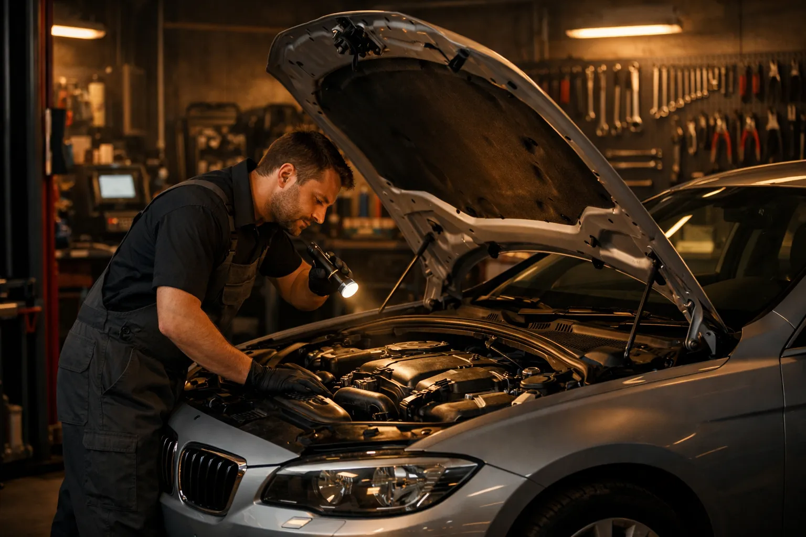
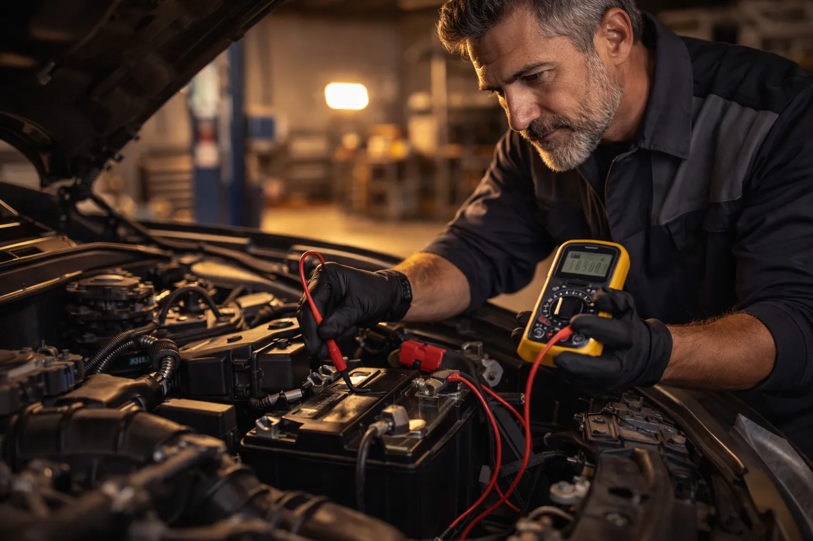
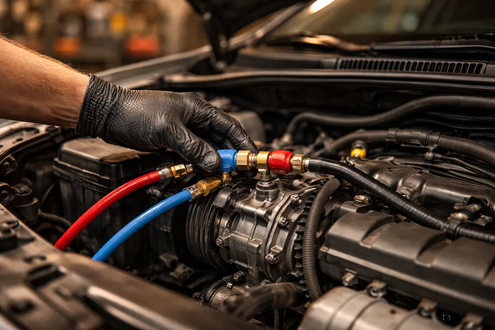
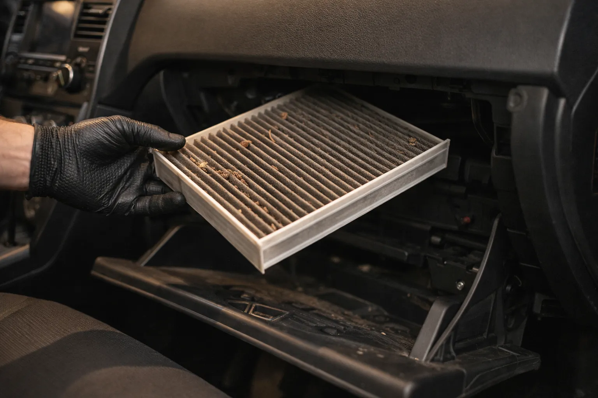
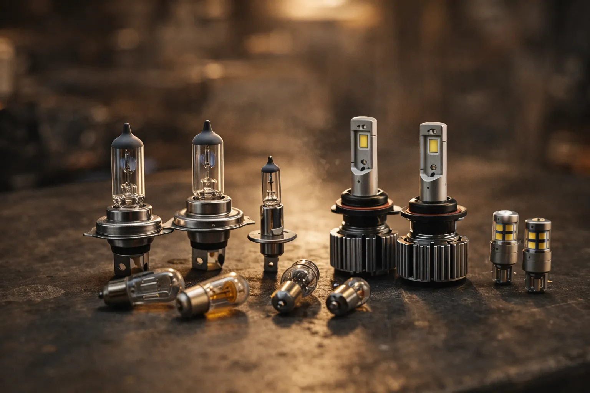
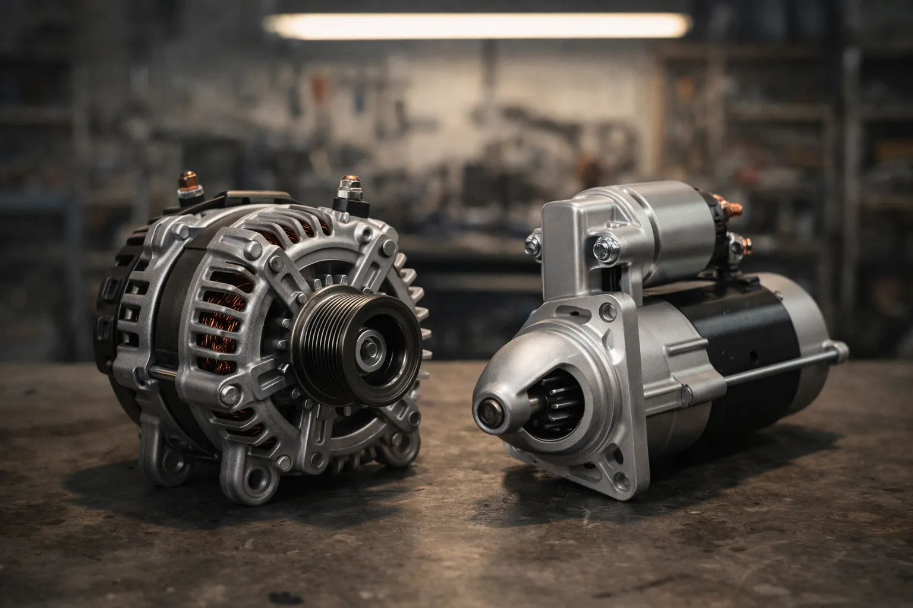

Batterie, climatisation, filtres : Ali-Ka assure l'entretien complet de votre véhicule à Etterbeek avec plus de 22 ans de savoir-faire et des tarifs transparents.
Une batterie défaillante peut vous laisser en panne au pire moment. Chez Ali-Ka, nous réalisons le test de charge et le changement de batterie à Etterbeek pour toutes les marques de voitures et utilitaires. Nous sélectionnons des batteries adaptées à votre motorisation et à l'usage que vous faites de votre véhicule. Les hivers belges et les trajets courts en ville réduisent considérablement la durée de vie d'une batterie ; nous recommandons un contrôle préventif chaque automne. Situés Avenue des Casernes, à proximité de la Place Jourdan et du Cinquantenaire, nous sommes facilement accessibles pour les automobilistes d'Etterbeek, d'Ixelles et de Schaerbeek.
Détails du service batterie
Une climatisation en bon état est essentielle pour votre confort, été comme hiver. Ali-Ka propose l'entretien et la recharge de climatisation automobile à Etterbeek, incluant le contrôle du circuit, la détection de fuites et le remplissage en gaz réfrigérant. Notre équipe intervient avec un équipement professionnel pour garantir des performances optimales. Nous conseillons une recharge tous les deux ans pour maintenir un air frais et sain dans l'habitacle, surtout lors des étés de plus en plus chauds à Bruxelles. En hiver, la climatisation aide aussi à désembuer rapidement le pare-brise. Automobilistes de Woluwe-Saint-Pierre, Auderghem ou du quartier européen, notre atelier vous accueille pour un service rapide et efficace.
Détails du service climatisation
Le filtre d'air d'habitacle joue un rôle clé dans la qualité de l'air que vous respirez en conduisant, surtout dans un environnement urbain comme Bruxelles. Chez Ali-Ka, nous assurons le remplacement du filtre habitacle à Etterbeek pour toutes les marques. Un filtre propre améliore le fonctionnement de la ventilation et de la climatisation tout en retenant pollens, poussières et particules fines. En ville, le filtre se colmate plus vite à cause des gaz d'échappement et de la pollution du trafic sur des axes comme la rue de la Loi ou l'avenue de Tervueren. Intervention rapide et prix compétitif, idéal pour les conducteurs d'Etterbeek et des communes avoisinantes.
Détails du filtre habitacle
Un phare grillé ou un feu arrière défaillant compromet votre sécurité et entraîne un refus au contrôle technique. Chez Ali-Ka, nous assurons le remplacement de l'éclairage automobile à Etterbeek : phares, feux de croisement, feux de recul, clignotants, feux stop et antibrouillards. Un bon éclairage est particulièrement important durant les mois d'automne et d'hiver, quand les journées raccourcissent et que la pluie rend les rues d'Etterbeek plus sombres dès la fin d'après-midi. Nous vérifions aussi le réglage de la hauteur des faisceaux pour garantir une visibilité optimale sans éblouir les autres usagers. Intervention rapide et sans rendez-vous pour toutes les marques. Les automobilistes d'Etterbeek, d'Ixelles et de Woluwe-Saint-Lambert nous font confiance pour rouler en toute sécurité.
Détails éclairage automobile
Votre voiture peine à démarrer malgré une batterie neuve ? Le problème vient peut-être du démarreur ou de l'alternateur. Ali-Ka effectue le diagnostic et le remplacement de démarreur et alternateur à Etterbeek. L'alternateur recharge la batterie en roulant : s'il est défaillant, la batterie se décharge progressivement. Les trajets courts répétés en ville, typiques de la conduite à Etterbeek et dans le centre de Bruxelles, empêchent une recharge complète et accélèrent l'usure de ces pièces. Nous testons les deux composants et vous proposons une solution claire. Depuis notre atelier à deux pas du Cinquantenaire, nous intervenons pour les conducteurs d'Etterbeek, Schaerbeek et du quartier européen.
Détails démarreur & alternateur
Batterie, clim ou filtres — Ali-Ka s'occupe de tout. Appelez-nous.
02 647 47 01